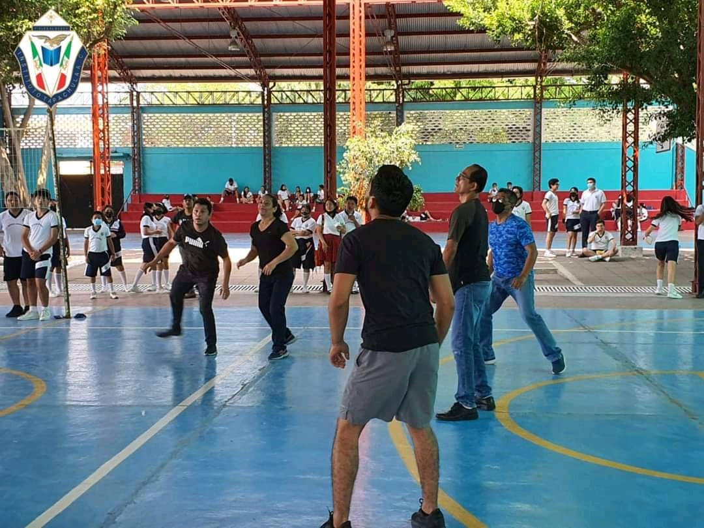
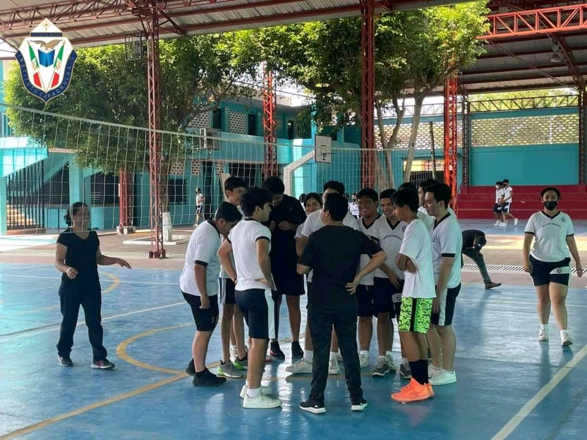
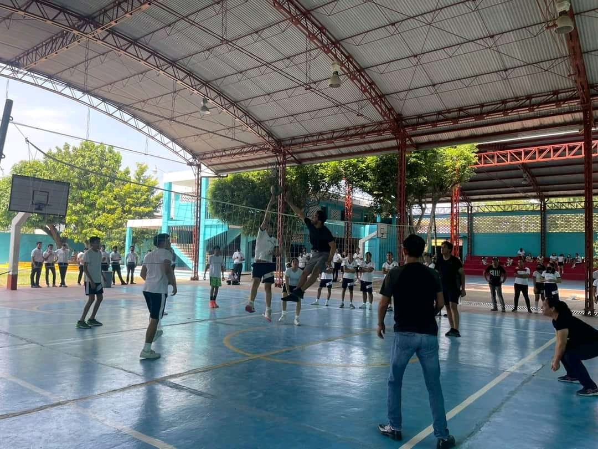

TORNEO DE VOLEIBOL PREPA
ALUMNOS VS MAESTROS
SECCIÓN PREPA
30 DE ABRIL DE 2022
LA SELECCIÓN DE VOLEIBOL DEL INSTITUTO TAPACHULA SECCIÓN PREPA, SORPRENDIÓ A TODO EL PÚBLICO CON SU INCREÍBLE PAPEL FRENTE A LA SELECCIÓN DE MAESTROS DEL INSTITUTO TAPACHULA.
EL INSTITUTO TAPACHULA SE PREPARA PARA EL TORNEO INTERCOLEGIAL DE PREPA PARA DAR SU MEJOR ESFUERZO EN ESTE INCREÍBLE TORNEO

- 
- 
- 